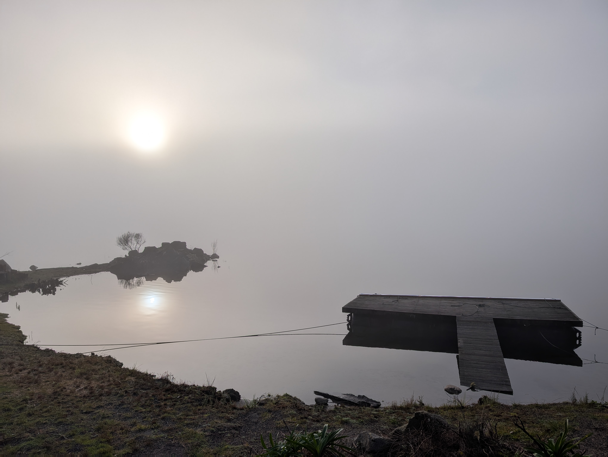

The patterns that shape the psyche also shape the cells. Illness is not a separate medical battle; it is a message from within the field of your life, asking to be seen, felt, and integrated.
Returning home to the body requires moving past intellectual self-awareness. It means finding the somatic certainty of a clean no, reweaving the inherited patterns of your bloodlines, and entering the deep practice of self-leadership.

The Orientation
I live and work off-grid within the elemental footprint of the land at Lake Rotomā.
My work does not sit within conventional therapeutic frameworks. It is an exploration of self-sovereignty, somatic integration, and the raw intelligence of self-leadership. After a professional background navigating physical practices, moving through a profound confrontation with cancer, and stripping away external systems, the focus here is entirely on the reclamation of wholeness.
This space exists as a direct transmission of that landscape.